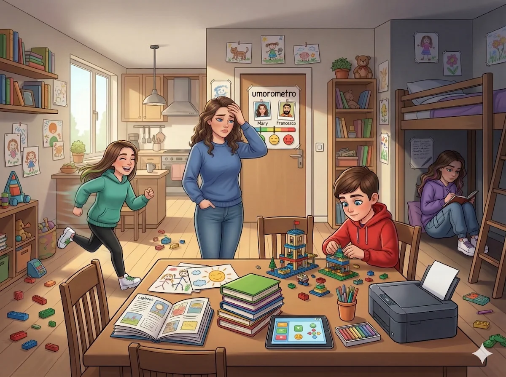
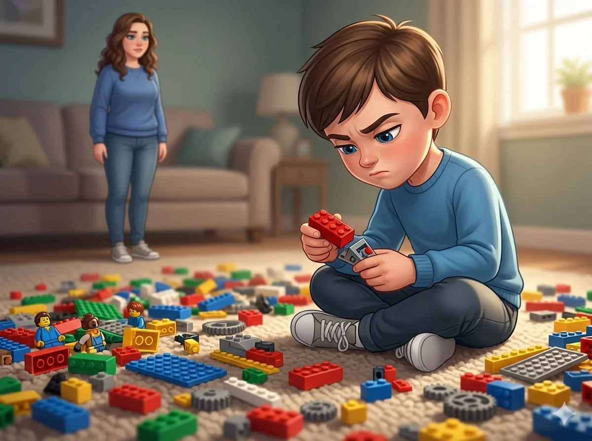
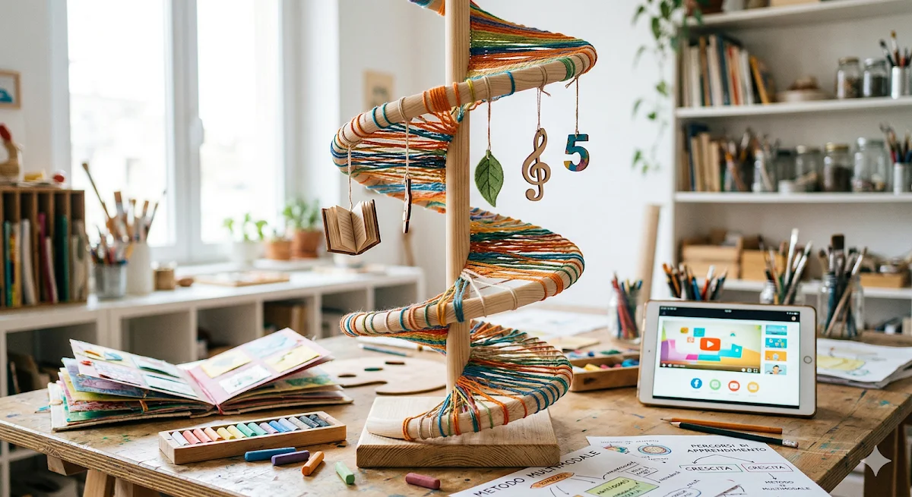
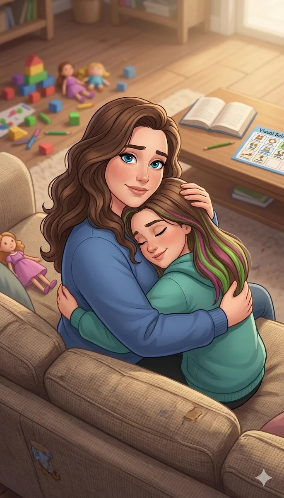

Se stai leggendo queste righe, probabilmente ieri sera sei andata a dormire con quella strana sensazione al petto. Quella miscela di amore infinito e stanchezza che ti fa chiedere: “Ma sto facendo bene? Perché oggi è stata così dura?”.

Benvenuta nel club.
Benvenuta in Life School Family.
Ieri, a casa nostra, è stata una giornata di quelle "panico".
Federico si è incastrato su un pezzo di Lego che non voleva saperne di stare dritto (e quando dico incastrato, intendo quel loop mentale che solo chi vive l’autismo conosce).
Ginevra era un tornado di energia, correva come il vento e io cercavo di non farmi travolgere.
E Beatrice? Lei era nel suo "spazio del segreto", quella stanza invisibile dove una ragazza costruisce il suo mondo lontano dai miei occhi.
In momenti così, la tentazione di vedere la neurodiversità come un "problema da risolvere" è forte.
Ma negli anni ho capito una cosa fondamentale: non è un guasto da riparare, è un codice da decifrare.

La scuola della "Sana Fatica"
Spesso deleghiamo la fatica alla scuola.
Pensiamo che lo sforzo debba avvenire solo tra i banchi, sotto lo sguardo di un insegnante.
Ma in istruzione parentale — o quando decidi di seguire davvero tuo figlio anche se va a scuola — la fatica diventa una faccenda di famiglia.
Io la chiamo Sana Fatica. È quella che rispetta i tempi, che non forza la natura del bambino, ma che lo sprona a fiorire.
Eppure, so quanto fa paura.
La paura che "resti indietro", che "si dimentichi tutto", che l'ansia da prestazione mangi il piacere di scoprire.
Il mio segreto: Il Metodo a Spirale
Per abbassare questa ansia (la mia e la loro), ho smesso di insegnare a "blocchi stagni". Ho iniziato a usare quello che chiamo il Metodo a Spirale.
Immagina l'apprendimento non come una linea retta che deve andare sempre avanti, ma come una vite. Gira. Ripassa dallo stesso punto, ma ogni volta un gradino più in su.
Un po' più complesso, ma con la sicurezza di aver già visto quel terreno.
Se Federico oggi non capisce un concetto di storia, non importa.
Ci torneremo tra una settimana, in un modo diverso (magari con un video o un gioco pratico, usando il mio Menu Multimodale).
La spirale accoglie la dimenticanza, la trasforma in pausa e poi ritorna, più forte di prima.

Non sei sola! Non sei Solo!
Life School Family è nata per questo.
Non per venderti la perfezione, ma per offrirti gli strumenti che io ho dovuto inventare per sopravvivere e per far brillare gli occhi dei miei figli.
Che tu sia una mamma homeschooler, un’insegnante che cerca un approccio più umano in classe, o un genitore di un bambino scolarizzato che vuole "qualcosa di più", sappi che qui sei a casa.
Nei prossimi giorni ti mostrerò proprio come applico questa "vite" ai miei materiali. Vedremo come abbassare l’ansia e ritrovare il piacere di imparare insieme.
Per ora, fermati un secondo.
Fai un respiro.
La tua casa è un laboratorio meraviglioso, anche quando è rumorosa.
Anche quando il silenzio è assordante.
Un abbraccio di sana fatica,
Mary
